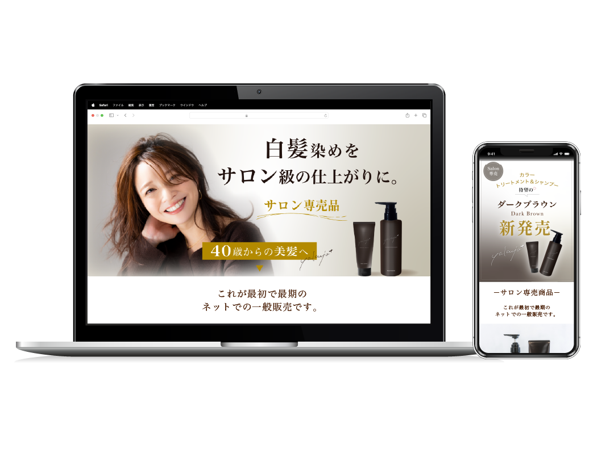
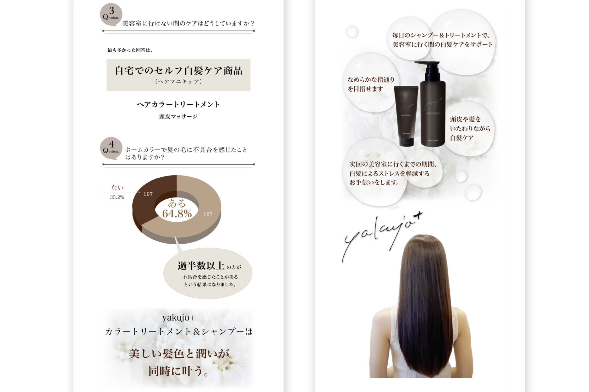
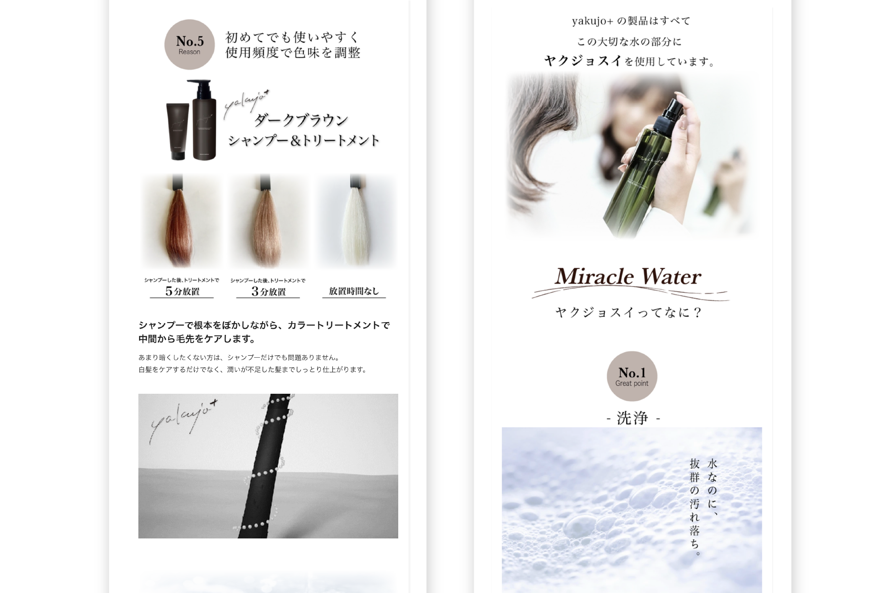
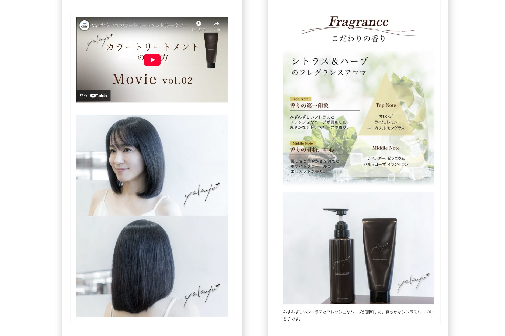

白髪ぼかしトリートメント｜WIXで作成

プロジェクト概要
販売戦略の設計からLP制作・ステップLINE構築、継続的な認知拡大・リスト獲得まで一貫支援
「頭皮と髪に優しい成分設計」という開発ストーリーを活かした販売プロジェクト。訴求戦略の設計 → LP制作・ステップLINE構築 → LPO・広告運用・クラファン支援による継続改善まで一貫して支援しています。
支援内容
Phase 1｜戦略設計
「白髪染めのダメージ・刺激を気にする層」をターゲットに、「髪と頭皮を守る白髪染め」という訴求軸を設計。先に一般顧客への販売実績を形成した後にサロン卸を展開する販売戦略を策定しました。
Phase 2｜制作・構築
戦略に基づき、以下を実装しました。
・開発ストーリーとメッセージ性を全面に表現したLP設計
・カラー仕上がりイメージのビジュアルで購入前の不安を解消
・ステップLINEの構築とリスト獲得導線の設計
・実際の使用者レビューによる信頼感強化
Phase 3｜継続的な運用・改善支援
リリース後も以下の運用支援を継続しています。
・LPOによるファーストビュー・CTAのA/BテストとCVR改善
・広告運用で2ステップマーケティングを実施
・クラウドファンディング支援による認知拡大
・LINE配信シナリオの最適化と新規リスト獲得
担当者コメント
開発ストーリーを活かした訴求設計から、LP制作・ステップLINE構築まで一貫支援。「作って終わり」ではなく、LPO・広告運用・クラファン支援を継続し、認知拡大と新規リスト獲得に伴走しています。
デザインギャラリー


